ARENA
Đội hình Arena: 13 đội chia theo 5 nhóm Attack, Magic, Tank, Hybrid và Universal, gồm đội Meta Prime, Meta và Sub-Meta. Bấm tab để lọc theo nhóm, gõ tên hero để tìm đội có hero đó.
Meta Prime
Meta Lineups
ATTACK #2
Cập nhật 26/11Attack 1-4 · Attack FormationHàng trước DEF +40% · Hàng sau ATK +10% AWKL+
AWKL+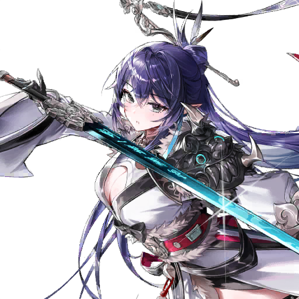
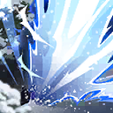
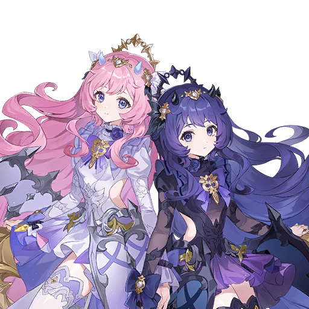
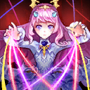
Ưu tiên 3

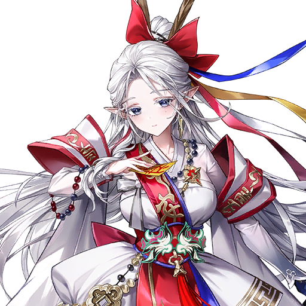
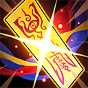
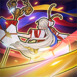
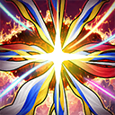
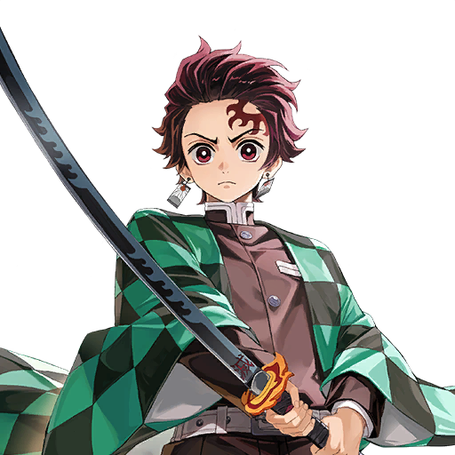
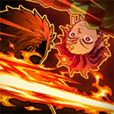
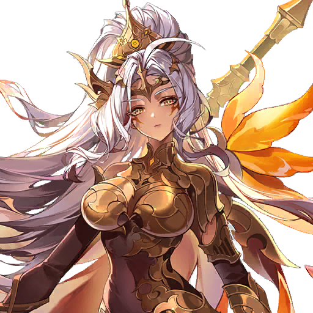
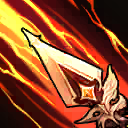
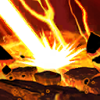
Ưu tiên 1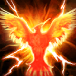
Có thể đổi sang trận hình Defense 4-1 · Protective Formation.
Pet: Jeo, Yu.
ATTACK #1
Cập nhật 26/10Attack 1-4 · Attack FormationHàng trước DEF +40% · Hàng sau ATK +10% AWKL+AWKL+
AWKL+AWKL+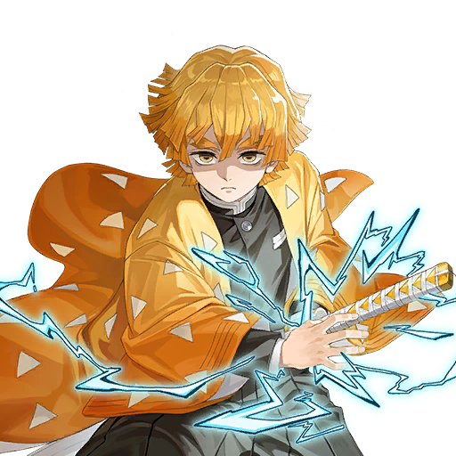
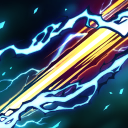
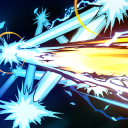
Ưu tiên 3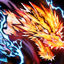
Có thể đổi sang trận hình Defense 4-1 · Protective Formation.
Pet: Jeo, Yu.
ATTACK #3
Cập nhật 26/10Defense 4-1 · Protective FormationHàng trước DEF +10% · Hàng sau ATK +40%AWKL+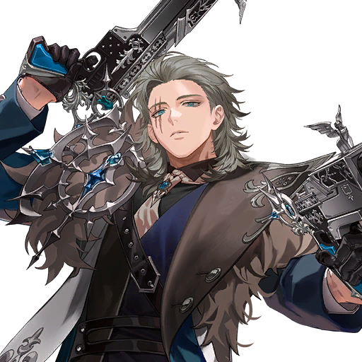
AWKL+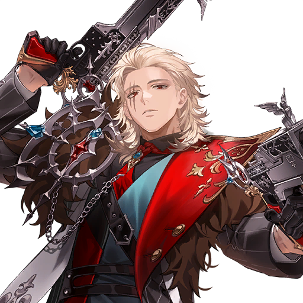
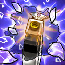
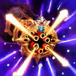
Pet: Jeo, Yu.
ATTACK #4
Cập nhật 26/09Defense 4-1 · Protective FormationHàng trước DEF +10% · Hàng sau ATK +40%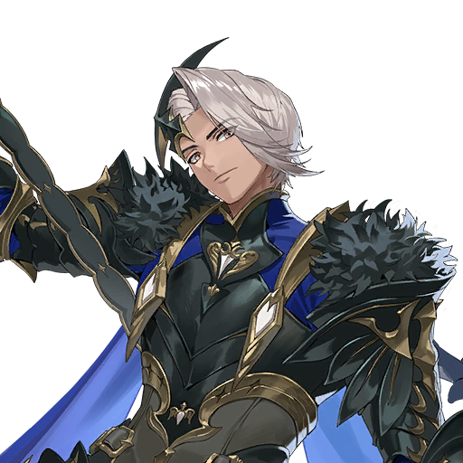
L+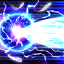
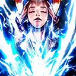
Pet: Jeo, Yu.
MAGIC #6
Cập nhật 26/10Defense 4-1 · Protective FormationHàng trước DEF +10% · Hàng sau ATK +40%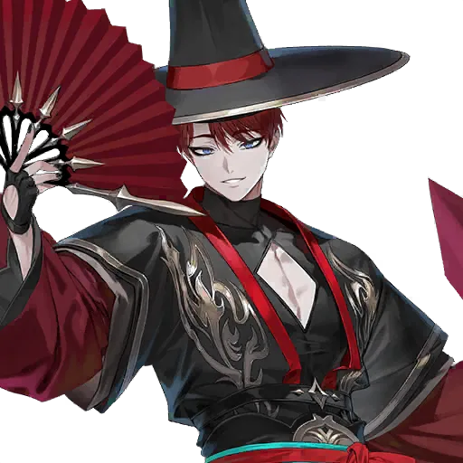
AWKL+ AWKL+
AWKL+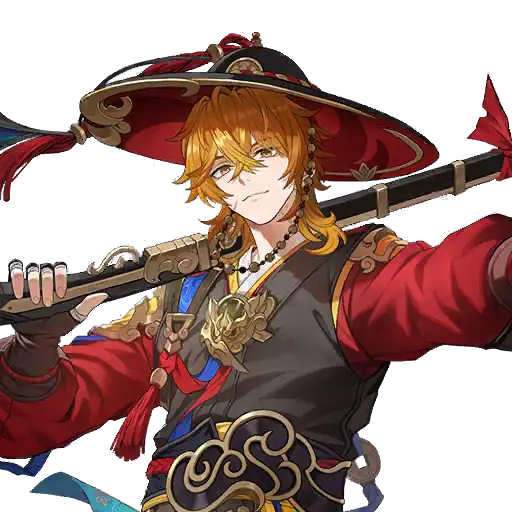
AWKL+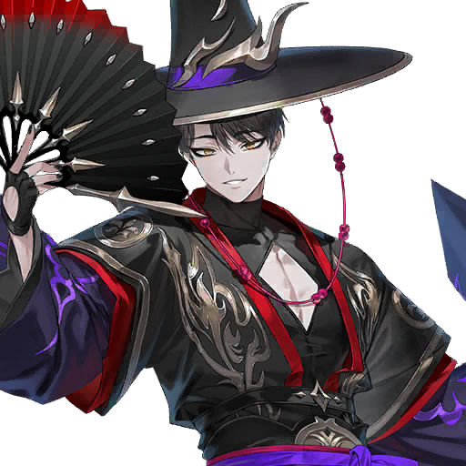
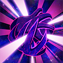
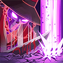
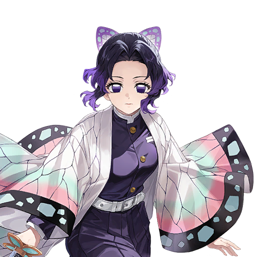
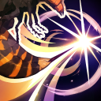
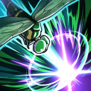
Ưu tiên 1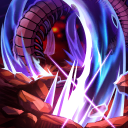
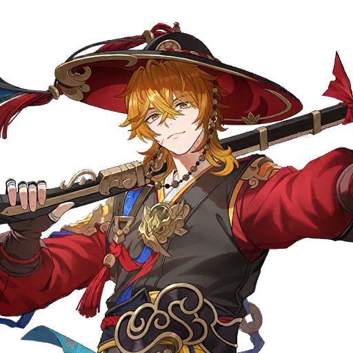
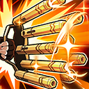
Ưu tiên 3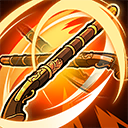
Ưu tiên 2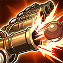
Pet: Jeo.
MAGIC #7
Cập nhật 26/10Defense 4-1 · Protective FormationHàng trước DEF +10% · Hàng sau ATK +40%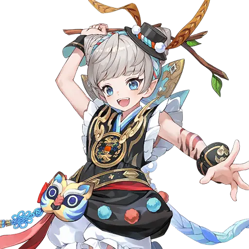
L+AWKL+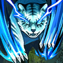
Ưu tiên 1Pet: Jeo.
TANK #4
Cập nhật 26/11Balanced 3-2 · Balanced FormationHàng trước DEF +15% · Hàng sau ATK +20% AWKL+
AWKL+
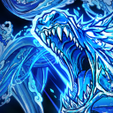

Pet: Pike, Ruu.
TANK #1
Cập nhật 26/09Defense 4-1 · Protective FormationHàng trước DEF +10% · Hàng sau ATK +40%Pet: Pike, Karam.
TANK #3
Cập nhật 26/10Balanced 3-2 · Balanced FormationHàng trước DEF +15% · Hàng sau ATK +20%Pet: Karam, Pike.
HYBRID #4
Cập nhật 26/10Attack 1-4 · Attack FormationHàng trước DEF +40% · Hàng sau ATK +10%AWKL+Pet: Jeo.
HYBRID #1
Cập nhật 26/09Defense 4-1 · Protective FormationHàng trước DEF +10% · Hàng sau ATK +40%Pet: Jeo.
UNIVERSAL #1
Cập nhật 26/10Attack 1-4 · Attack FormationHàng trước DEF +40% · Hàng sau ATK +10%Có thể đổi sang trận hình Basic 2-3 · Basic Formation.
Pet: Ruu, Karam.
UNIVERSAL #2
Cập nhật 26/10Basic 2-3 · Basic FormationHàng trước DEF +20% · Hàng sau ATK +15%AWKL+Có thể đổi sang trận hình Attack 1-4 · Attack Formation.
Pet: Pike, Ruu.
Hero thay thế — ATTACK
Hero thay thế — MAGIC
Hero thay thế — TANK
Shinobu KochoHero thay thế — HYBRID
Hero thay thế — UNIVERSAL
Pet Options
Pet dùng cho các đội trên — mỗi đội chọn 1 pet.
Cùng khám phá Seven Knights Re:Birth
Theo dõi fanpage để cập nhật thêm các hướng dẫn dành cho cộng đồng.